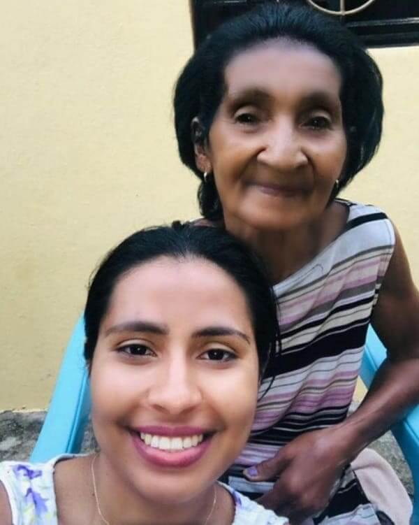
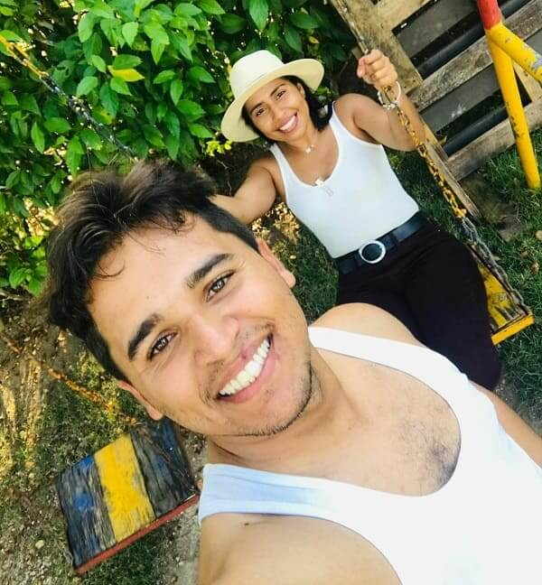
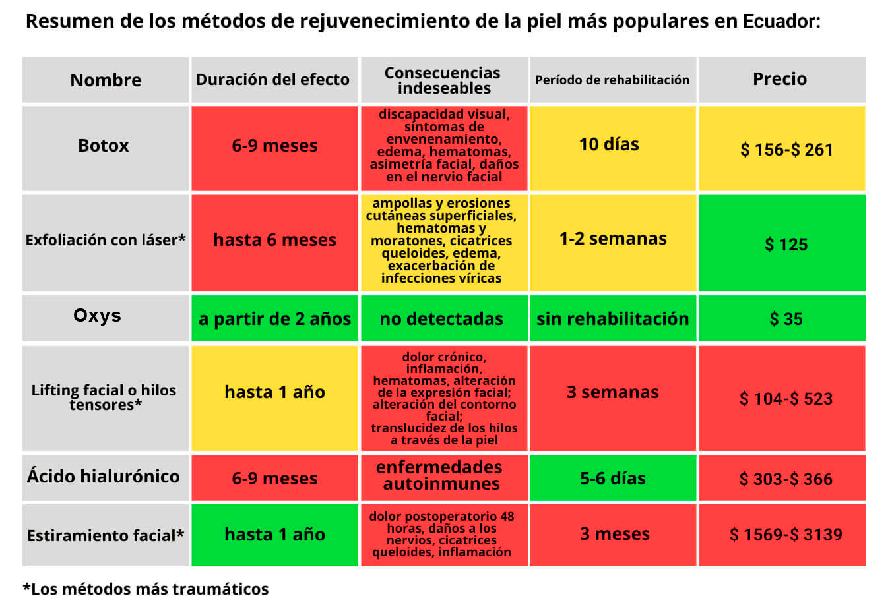

- "Incluso a los 73, puedes parecer más joven"
¿Cómo borrar de tu rostro decenas de años vividos?
Ganadora del concurso "Historias de la vida real"
Hola, hoy está con nosotros Rosa Cedeño, de República del Ecuador. Rosita envió a nuestro equipo editorial una historia increíble que cambió su vida. Esta historia ayudará a la gente común a borrar literalmente decenas de años de su rostro y a recuperar su belleza.
Nadie quiere envejecer
No hace mucho, mi madre y yo parecíamos ancianas. La belleza y la juventud fueron sustituidas por las arrugas.
Mi madre tiene 73 años. Ella siempre aparento más edad de la que tenía, y son muchas las razones para ello.
Ella había trabajado en el campo la mayor parte de su vida. El sol abrasador y el viento habían dejado una notable marca en el hermoso rostro de mi madre.
Mi padre murió cuando yo era sólo un bebé y mi madre tuvo que criar sola a 10 hijos. Así que durante muchos años sus pensamientos se centraron únicamente en cómo sobrevivir y alimentar a su numerosa familia. La mala alimentación y el estrés constante... Todo ello provocó el envejecimiento prematuro de la piel. Esta mujer era muy autosuficiente, llevando esta carga. Evidentemente, eso fue lo que le quitó la juventud.
Los científicos descubrieron que la aceleración del envejecimiento está directamente relacionada con factores externos. La piel del rostro envejece debido al estrés, la edad, la ecología, los cuidados inadecuados o la falta de ellos. Los factores genéticos sólo representan el 20%.
Todo empezó con las patas de gallo y terminó con arrugas profundas y tempranas, el óvalo facial se volvió difuso y la piel flácida.
Ambas nunca pensamos que el estilo de vida pudiera tener un efecto tan devastador para la belleza y la juventud de la piel. Para ambas, la pérdida de la belleza fue una verdadera tragedia...
Vejez en el reflejo
Tengo 40 años. Mi marido me dejó por una joven belleza porque parezco una vieja. Siempre pensé que el resto de mi vida lo pasaría sola y sin belleza.
Mi piel siempre fue seca y envejeció pronto. Me avergonzaba de mis arrugas, me deprimía por ellas. Mirando en el espejo cómo envejecía día tras día, derramé lágrimas y me rendí.
La cirugía, el Botox y los rellenos faciales, todos estos procedimientos para recuperar la juventud, son cosa de ricos. La gente paga cientos de miles de pesos por estos procedimientos, y los que no tienen esa oportunidad permanecen viejos. No podía pagar ninguno de estos procedimientos y estaba segura de que nunca recuperaría mi juventud.
En un momento, la vida cambió a causa de un acontecimiento al que Dios mismo nos condujo...
Rejuvenecí casualmente
Una amiga me regaló una crema rejuvenecedora prometiendo que este producto haría que mi piel se viera joven, tensa, y que yo parecería 20 años más joven.
Desconfiaba de las cremas rejuvenecedoras. Tenía mucha experiencia en el uso de diversos productos para el rejuvenecimiento de la piel, y ninguno de ellos me ayudó. Algunas de estas cremas sólo agravaban la situación con reacciones alérgicas. Por eso pronto me olvidé del regalo...
Mientras tanto mi madre la utilizaba. Como tenía mala visión, confundió la crema de rejuvenecimiento facial con la crema de manos.
- "Rosita, tócame las manos, se han vuelto muy suaves", me dijo mi madre.
Me quedé petrificada con lo que vi. Era como si sus manos tuvieran veinte años menos. Se hidrataron, la piel se tensó y se volvió más elástica, e incluso el tono de piel era uniforme.
- Mamá, ¿qué te has hecho en las manos? - exclamé.
- Nada, solo tomé una de tus cremas de manos.
Según mi madre, utilizó esta crema durante un mes, sólo una vez al día.
Yo no entendía cómo era posible; parecía que mi madre se había sometido a un tratamiento de Botox en secreto. Casi me vuelvo loca. ¿Podría esta crema satisfacer realmente mi deseo de ser bella?
Este hecho me convenció de utilizar la crema para su propósito.
Una nueva vida
Pedimos un envase adicional y ambas utilizamos la crema diariamente.
Tras el primer día de uso, noté un ligero efecto, mi piel se sentía mucho más agradable al tacto. Incluso podía sentir físicamente estos cambios, como si el calor se extendiera por mi cara.
Cada día, la piel de la cara mejora, la tez se vuelve más saludable y la piel es más elástica. No podía creerlo.
Después de un mes de uso, los resultados fueron increíbles. Parecíamos 20 años más jóvenes y ambas estábamos literalmente radiantes de felicidad. Ya pasó un año y nuestras caras siguen siendo hermosas.
Mamá tiene un aspecto increíble, hacía tiempo que no la veía tan feliz y con tanta energía. Ahora sale a pasear cada vez más a menudo y dice bromeando:
- "Rosita, no me he vuelto tan guapa sólo para quedarme en casa. Ahora sin vergüenza puedo salir a la calle y mostrar mi juventud".
Mis amigos y conocidos no paran de hacerme cumplidos cada vez que se encuentran conmigo. Incluso piensan que me he inyectado Botox o que me he sometido a una cirugía plástica. Todo el mundo se preguntaba cuándo me hice esto.
La transformación me llenó de energía, me dio más confianza. Los chicos dos veces menores que yo quieren hacer amistad conmigo. Ahora, este aspecto podría engañar a cualquiera. Ni siquiera podría soñar con eso.
Hace poco conocí a un hombre muy atractivo que tiene 34 años. Él pensó que tenía 25 años, y cuando se enteró de mi verdadera edad, le llamó la atención que pareciera tan joven.
Hace 9 años que me divorcié de mi marido, y por primera vez desde entonces tengo una relación. Mi nueva pareja me quiere muchísimo, me habla constantemente de amor y alaba mi belleza. Al recuperar mi juventud, pude recuperar la atención que había soñado durante tanto tiempo. La atención que toda mujer merece.
En República del Ecuador son muchas las mujeres que no pueden o no quieren utilizar métodos caros y traumáticos de rejuvenecimiento. Por eso conté mi historia, con la esperanza de ayudar a mujeres como yo a recuperar su belleza.
El método del que hablé es . Se trata de un método sorprendente, fácil y asequible para que cualquiera pueda rejuvenecer rápidamente su piel en casa. Y deseo que todas las mujeres experimenten un nuevo florecimiento de la juventud, independientemente de su edad.
Una pregunta al experto: ¿qué es y por qué es mejor que otros tratamientos antienvejecimiento?
María Romero
Médico, dermatólogo-esteticista, 25 años de experiencia en dermatología
- "El rejuvenecimiento es un deseo humano natural, pero no todo el mundo sabe hacerlo de forma competente, por lo que la gente gasta mucho dinero en procedimientos inútiles y a veces peligrosos.
se convirtió en la mejor solución en la lucha contra el envejecimiento de la piel debido a sus resultados sin consecuencias. Por eso la propongo como alternativa a mis clientes que rechazan los tratamientos de salón preocupados por las consecuencias."
- "Esta comparación demuestra una vez más que es el mejor método, que supera a los tratamientos de salón en todos los sentidos".
¿Para quién es adecuada esta crema?
- "Con , todo el mundo puede tener una piel facial sana y joven, independientemente de la edad, la salud o el estado inicial de la piel.
Para esta crema, los fabricantes desarrollaron una fórmula única compuesta de extractos 100% naturales. La fórmula regula los efectos de los factores externos: protege la piel de los rayos UV, la hidrata, la tonifica y la protege de las toxinas.
A partir de los 25 años, la producción de colágeno y elastina en la piel disminuye, restablece los procesos de regeneración, obligando a la piel a producir por sí misma estas sustancias, recuperando así su aspecto saludable."
Los resultados por el uso de la crema:
- Mejora de los procesos metabólicos;
- Reducción de la hiperpigmentación y de las manchas de pigmentación, igualando el tono de la piel;
- Protección contra los efectos de la radiación solar y otros factores externos;
- Mantiene la hidratación y fortalece la piel.
¿Hay otros ejemplos de rejuvenecimiento además del ejemplo de Rosita y su madre?
- "De hecho, el ejemplo de la madre de Rosita es uno de los más reveladores, porque a la piel envejecida le cuesta más estimular los procesos de regeneración. Pero logró hacer retroceder el tiempo incluso en un caso tan difícil.
Mis clientes, tras obtener excelentes resultados con el uso de la crema, la piden para sus madres, abuelas, y éstas, al notar el efecto, lo cuentan a sus amistades y conocidos.
A menudo recomiendo esta crema a mis clientes y recibo cientos de comentarios positivos".
¿Dónde pueden nuestros lectores comprar ?
La crema se vende únicamente a través del sitio web oficial . La crema no puede comprarse en farmacias o salones de belleza. Ya que no es rentable para su negocio. Es mucho más rentable para las organizaciones comerciales vender productos más caros e ineficaces, para que los clientes vengan más a menudo y desembolsen grandes cantidades de dinero regularmente. Desgraciadamente, la burocracia no puede ser erradicada.
Sin embargo, esta situación beneficia a las personas. Al vender productos a través del sitio web, los fabricantes no tienen que gastar dinero en gastos adicionales, por lo que el precio del producto es muy bajo y todo el mundo puede comprarlo.
Para dar a conocer esta crema y superar la burocracia, los fabricantes están llevando a cabo una promoción temporal. Cualquier residente mexicano que lo desee puede participar.
Los lectores pueden ganar un descuento de hasta el 50%. Date prisa, el precio del producto sin la promoción es de . Ahora puedes comprar la crema por si tienes la suerte de ganar el máximo descuento.
Si haces tu pedido antes del , tienes la oportunidad de conseguir con el máximo descuento .
La cantidad de a precio promocional es estrictamente limitada.